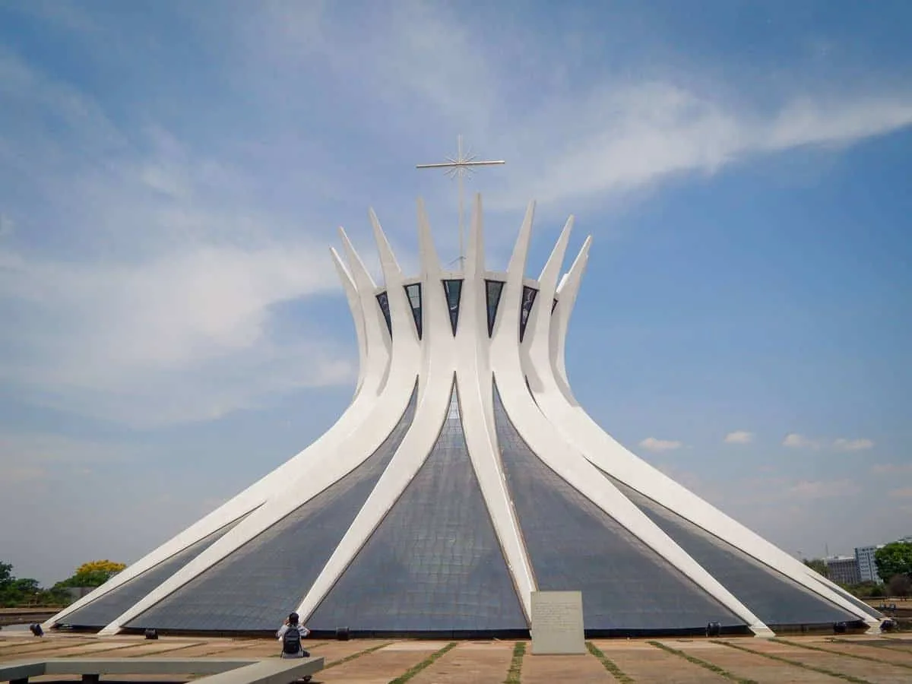
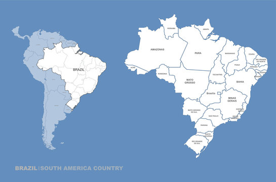

Cathedral of Brasília

Christ the Redeemer (Rio de Janeiro)

Capital: Brasília
Population: ~215 million (2025 est.)
Language: Portuguese
Traditions: Samba dance and Capoeira (a martial art combining dance and music).
Foods: Feijoada (black bean stew), pão de queijo (cheese bread), and brigadeiro (chocolate dessert).
Festivals: Carnival, Festa Junina, and Bumba Meu Boi.
Activities: Football (soccer) is the most popular sport; Brazil is also known for beach life, Amazon river exploration, and music festivals.
